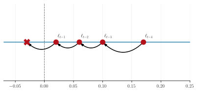
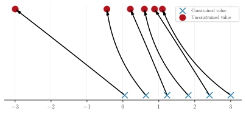

🔪 The sharp bits
Pseudo-randomness
Libraries like NumPy and Scipy use stateful pseudorandom number generators (PRNGs). However, the PRNG in JAX is stateless. This means that for a given function, the return always returns the same result unless the seed is changed. This is a good thing, but it means that we need to be careful when using JAX's PRNGs.
To examine what it means for a PRNG to be stateful, consider the following example:
import numpy as np
import jax.random as jr
key = jr.key(123)
# NumPy
print('NumPy:')
print(np.random.random())
print(np.random.random())
print('\nJAX:')
print(jr.uniform(key))
print(jr.uniform(key))
print('\nSplitting key')
key, subkey = jr.split(key)
print(jr.uniform(subkey))
GPJax relies on JAX's PRNGs for all random number generation. Whilst we try wherever possible to handle the PRNG key's state for you, care must be taken when defining your own models and inference schemes to ensure that the PRNG key is handled correctly. The JAX documentation has an excellent section on this.
Bijectors
Parameters such as the kernel's lengthscale or variance have their support defined on a constrained subset of the real-line. During gradient-based optimisation, as we approach the set's boundary, it becomes possible that we could step outside of the set's support and introduce a numerical and mathematical error into our model. For example, consider the lengthscale parameter \(\ell\), which we know must be strictly positive. If at \(t^{\text{th}}\) iterate, our current estimate of \(\ell\) was 0.02 and our derivative informed us that \(\ell\) should decrease, then if our learning rate is greater is than 0.03, we would end up with a negative variance term. We visualise this issue below where the red cross denotes the invalid lengthscale value that would be obtained, were we to optimise in the unconstrained parameter space.

A simple but impractical solution would be to use a tiny learning rate which would reduce the possibility of stepping outside of the parameter's support. However, this would be incredibly costly and does not eradicate the problem. An alternative solution is to apply a functional mapping to the parameter that projects it from a constrained subspace of the real-line onto the entire real-line. Here, gradient updates are applied in the unconstrained parameter space before transforming the value back to the original support of the parameters. Such a transformation is known as a bijection.

To help understand this, we show the effect of using a log-exp bijector in the above figure. We have six points on the positive real line that range from 0.1 to 3 depicted by a blue cross. We then apply the bijector by log-transforming the constrained value. This gives us the points' unconstrained value which we depict by a red circle. It is this value that we apply gradient updates to. When we wish to recover the constrained value, we apply the inverse of the bijector, which is the exponential function in this case. This gives us back the blue cross.
In GPJax, we supply bijective functions using Tensorflow Probability.
Positive-definiteness
"Symmetric positive definiteness is one of the highest accolades to which a matrix can aspire" - Nicholas Highman, Accuracy and stability of numerical algorithms [@higham2022accuracy]
Why is positive-definiteness important?
The Gram matrix of a kernel, a concept that we explore more in our kernels notebook. As such, we have a range of tools at our disposal to make subsequent operations on the covariance matrix faster. One of these tools is the Cholesky factorisation that uniquely decomposes any symmetric positive-definite matrix \(\mathbf{\Sigma}\) by
where \(\mathbf{L}\) is a lower triangular matrix.
We make use of this result in GPJax when solving linear systems of equations of the form \(\mathbf{A}\boldsymbol{x} = \boldsymbol{b}\). Whilst seemingly abstract at first, such problems are frequently encountered when constructing Gaussian process models. One such example is frequently encountered in the regression setting for learning Gaussian process kernel hyperparameters. Here we have labels \(\boldsymbol{y} \sim \mathcal{N}(f(\boldsymbol{x}), \sigma^2\mathbf{I})\) with \(f(\boldsymbol{x}) \sim \mathcal{N}(\boldsymbol{0}, \mathbf{K}_{\boldsymbol{xx}})\) arising from zero-mean Gaussian process prior and Gram matrix \(\mathbf{K}_{\boldsymbol{xx}}\) at the inputs \(\boldsymbol{x}\). Here the marginal log-likelihood comprises the following form
and the goal of inference is to maximise kernel hyperparameters (contained in the Gram matrix \(\mathbf{K}_{\boldsymbol{xx}}\)) and likelihood hyperparameters (contained in the noise covariance \(\sigma^2\mathbf{I}\)). Computing the marginal log-likelihood (and its gradients), draws our attention to the term


then we can see a solution can be obtained by solving the corresponding system of equations. By working with \(\mathbf{L} = \operatorname{chol}{\mathbf{A}}\) instead of \(\mathbf{A}\), we save a significant amount of floating-point operations (flops) by solving two triangular systems of equations (one for \(\mathbf{L}\) and another for \(\mathbf{L}^{\top}\)) instead of one dense system of equations. Solving two triangular systems of equations has complexity \(\mathcal{O}(n^3/6)\); a vast improvement compared to regular solvers that have \(\mathcal{O}(n^3)\) complexity in the number of datapoints \(n\).
The Cholesky drawback
While the computational acceleration provided by using Cholesky factors instead of dense matrices is hopefully now apparent, an awkward numerical instability gotcha can arise due to floating-point rounding errors. When we evaluate a covariance function on a set of points that are very close to one another, eigenvalues of the corresponding Gram matrix can get very small. While not mathematically less than zero, the smallest eigenvalues can become negative-valued due to finite-precision numerical errors. This becomes a problem when we want to compute a Cholesky factor since this requires that the input matrix is numerically positive-definite. If there are negative eigenvalues, this violates the requirements and results in a "Cholesky failure".
To resolve this, we apply some numerical jitter to the diagonals of any Gram matrix. Typically this is very small, with \(10^{-6}\) being the system default. However, for some problems, this amount may need to be increased.
Slow-to-evaluate
Famously, a regular Gaussian process model (as detailed in our regression notebook) will scale cubically in the number of data points. Consequently, if you try to fit your Gaussian process model to a data set containing more than several thousand data points, then you will likely incur a significant computational overhead. In such cases, we recommend using Sparse Gaussian processes to alleviate this issue.
When the data contains less than around 50000 data points, we recommend using the collapsed evidence lower bound objective [@titsias2009] to optimise the parameters of your sparse Gaussian process model. Such a model will scale linearly in the number of data points and quadratically in the number of inducing points. We demonstrate its use in our sparse regression notebook.
For data sets exceeding 50000 data points, even the sparse Gaussian process outlined above will become computationally infeasible. In such cases, we recommend using the uncollapsed evidence lower bound objective [@hensman2013gaussian] that allows stochastic mini-batch optimisation of the parameters of your sparse Gaussian process model. Such a model will scale linearly in the batch size and quadratically in the number of inducing points. We demonstrate its use in our sparse stochastic variational inference notebook.